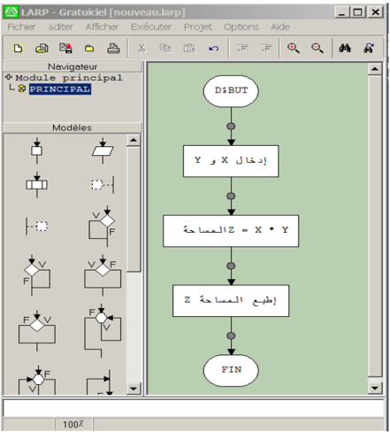
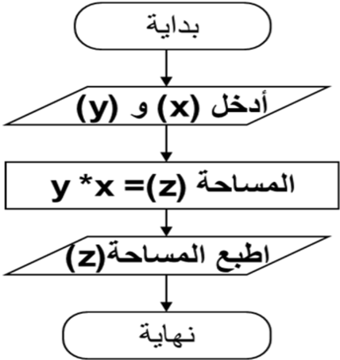
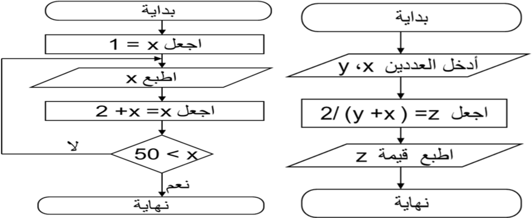

عرف حسن حسين زيتون المشكلة بأنها: "موقف مربك أو سؤال محير أو مدهش يواجه الفرد أو مجموعة من الأفراد فيشعرون بحاجة إلى الحل، ولا يوجد لديهم إمكانات أو خبرات حالية مخزنة في بنيتهم المعرفية تمكنهم من الوصول إلى الحل بصورة فورية أو روتينية، بل عليهم بذل جهد معرفي مهاري للوصول إلى الحل، أي أن الفرد يجاهد للعثور على هذا الحل".
إننا عندما نتعلم ونتدرب على صياغة حل المسائل بواسطة الحاسوب، فإن هذا لا يعني أن الفائدة تقتصر على المسائل الحسابية والمنطقية فحسب، بل إننا نهدف من تعلم هذا الموضوع إلى:
إن صياغة حل مشكلة ما هي تحديد الخطوات المتبعة للوصول إلى الحل، وتتكون هذه الصياغة من ثلاث خطوات أساسية هي:
##### فهم المسألة وتحليلها وتحديد عناصرها
لا يمكن حل مسألة ما إن لم يتم فهمها بشكل دقيق وكامل، وكما يقال: "فهم السؤال نصف الجواب".
والمقصود بفهم المسألة وتحليل عناصرها هو استخراج العناصر الأساسية لحل هذه المسألة، وهي:
##### مقدمة
بالرغم من أن الحاسوب يمتاز بقدرته على إنجاز العمليات الحسابية والتعليمات المعطاة له بسرعة فائقة وبدقة، وعلى حفظ المعلومات التي يعجز الإنسان عن حفظها واستعادتها، إلا أنه يعجز عن القيام بشكل ذاتي بحل أي مسألة مهما كانت بسيطة، بينما الإنسان يمتاز عن الحاسوب بقدرته على التفكير وإرشاده إلى طريقة الحل، أي أن يقوم مبدئيًا بتمثيلها على شكل تمثيل بياني (مخطط).
##### تعريف المخططات الانسيابية:
هي تمثيل بياني يوضح خطوات حل مشكلة (مسألة) معينة من البداية إلى النهاية، مع إخفاء التفاصيل والأخذ بعين الاعتبار كل الحلول الممكنة لإعطاء الصورة العامة للحل، فهي تعبر عن تدفق عمليات المسألة.
##### لإنشاء مخطط انسيابي لمسألة محددة نتبع ما يلي:
##### تحديد وتحليل عناصر المسألة:
وهي المرحلة الأساسية لحل مسألة وتعتمد عادة على ثلاثة خطوات:
##### الأشكال الهندسية المستعملة في رسم المخطط الانسيابي:
أهم الأشكال الهندسية في المخططات الانسيابية:
| المعنى | الاسم | الرمز |
|---|---|---|
| يمثل بداية أو نهاية البرنامج | بداية/نهاية (بيضاوي) | |
| يمثل إدخال البيانات أثناء البرنامج أو إخراجها | إدخال/إخراج (متوازي أضلاع) | |
| يمثل عملية معالجة البيانات | عملية (مستطيل) | |
| يمثل اتخاذ القرار أو تعبير منطقي يحتاج إلى جواب | قرار (معين) | |
| يمثل اتجاه الانسياب المنطقي للبرنامج | خط انسياب (سهم) | |
| التوصيل بين أجزاء المخطط | نقطة الربط (دائرة) |
##### مثال:
نريد حساب مساحة المستطيل بمعرفة الطول والعرض.
قم بصياغة حل المسألة، وهذا بتحليل عناصر المسألة ثم كتابة الخطوات الخوارزمية ثم رسم المخطط الانسيابي، إذا علمت أن مساحة المستطيل = الطول × العرض.
###### تحليل عناصر المسألة:


